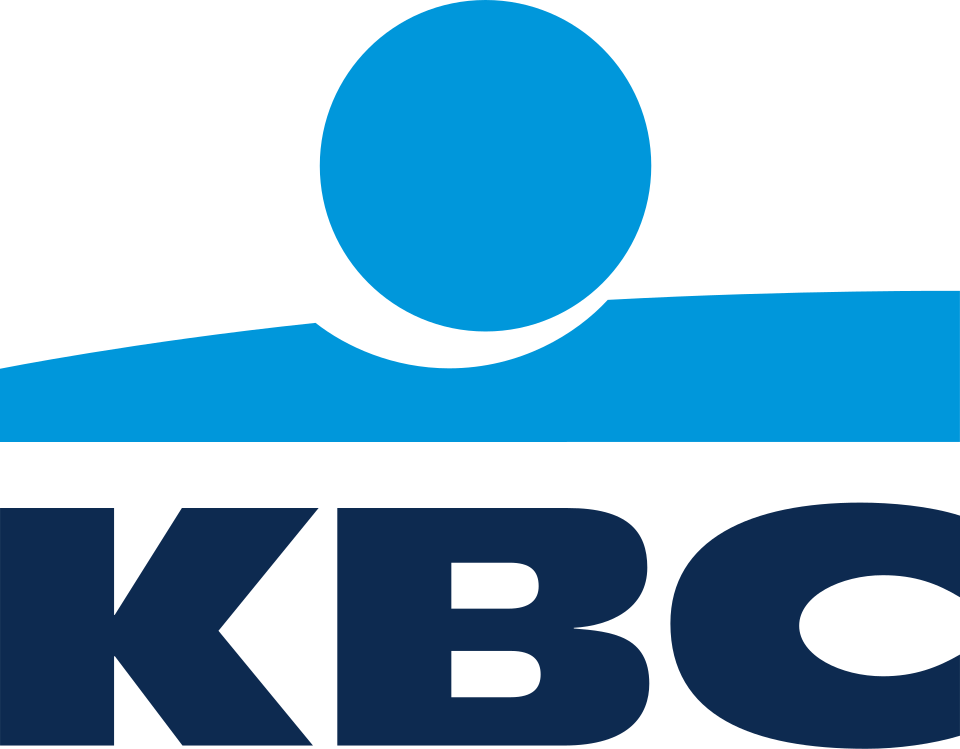

KBC 그룹 KBC Group
KBC 그룹(KBC Group)은 벨기에 브뤼셀에 본사를 둔 은행·보험 통합 금융그룹이다. 벨기에와 불가리아, 체코, 헝가리, 슬로바키아에서 개인 고객과 중소기업을 주요 대상으로 영업한다.
최종 업데이트

KBC 그룹은 어떤 브랜드인가
KBC 그룹은 은행과 보험을 함께 제공하는 벨기에의 다채널 종합 금융회사이다. 개인 고객과 중소기업을 중심으로 벨기에, 불가리아, 체코, 헝가리, 슬로바키아에서 사업을 하며, 본사는 브뤼셀에 있다.
벨기에의 주요 기업 중 하나이며, 벨기에 안에서 두 번째로 큰 방카슈랑스 그룹으로 평가된다. 2020년 말 기준으로 시가총액 기준 유럽에서 15번째로 큰 은행이었고, 중·동부 유럽의 주요 금융 사업자이기도 하다.
같은 시기 직원은 약 41,000명이며 절반 이상이 중·동부 유럽에서 일하고, 전 세계 고객은 12 million명이다. Forbes Global 2000 기업 명단에 이름을 올린 기업이다.
KBC 그룹은 어떻게 시작되고 성장했나
KBC 그룹은 1998년 Kredietbank(KB), 협동조합 은행 CERA Bank, ABB Insurance, Fidelitas Insurance가 합병하면서 만들어졌다. 뿌리는 1889년 7월 17일 가톨릭계 인사들이 루뱅 일대의 사업 자금을 대기 위해 세운 협동조합 은행 Volksbank van Leuven에 닿아 있다.
1890년대 초에는 Boerenbond 농민 운동이 농촌 협동 금융망을 키웠고, 1895년 이를 돕는 중앙 기구로 Middenkredietkas를 설립했다. 1921년 안트베르펜에서 설립된 Algemeene Bankvereeniging는 1928년 Volksbank van Leuven과 합병했고, 1931년에는 지주회사 Almanij가 만들어졌다.
KBC 그룹의 브랜드 아이덴티티는 무엇인가
방카슈랑스 모델을 바탕으로 벨기에와 중·동부 유럽의 개인 고객과 중소기업에 집중하며, 농민 협동조합 금융에서 이어진 뿌리를 가진 금융그룹이다.
KBC 그룹은 지금 어떤 상태인가
KBC 그룹은 핵심 주주 집단의 통제를 받으며 유통 주식 비율은 약 60%이다. 핵심 주주로는 CERA가 통제하는 상장사 KBC Ancora가 19%, 농민 단체 Boerenbond의 수단인 MRBB가 12%, 산업가 가문 집단이 8%, CERA가 직접 3%를 보유한다.
주식은 브뤼셀의 Euronext 거래소에서 거래된다. 2014년 말 유럽 은행 감독 체제가 시행된 이후 Significant Institution으로 지정되어 유럽중앙은행의 직접 감독을 받는다.
KBC 그룹 로고는 어떻게 변해왔나
자주 묻는 질문
KBC 그룹는 어느 나라 브랜드인가요?
KBC 그룹는 벨기에의 금융 브랜드입니다.
KBC 그룹는 언제 설립되었나요?
KBC 그룹는 1998년 설립되었습니다.
KBC 그룹의 브랜드 아이덴티티는 무엇인가요?
방카슈랑스 모델을 바탕으로 벨기에와 중·동부 유럽의 개인 고객과 중소기업에 집중하며, 농민 협동조합 금융에서 이어진 뿌리를 가진 금융그룹이다.
KBC 그룹는 현재 어떤 상태인가요?
KBC 그룹은 핵심 주주 집단의 통제를 받으며 유통 주식 비율은 약 60%이다.
KBC 그룹의 본사는 어디에 있나요?
KBC 그룹의 본사는 브뤼셀에 있습니다(위키데이터 기준).
KBC 그룹의 공식 웹사이트는 어디인가요?
KBC 그룹의 공식 웹사이트는 https://www.kbc.com/ 입니다.
출처와 검증
KBC 그룹 관련 참고: 공식 웹사이트 · 위키데이터 Q29560723 · 한국어 위키백과 · 영어 위키백과. 브랜드명은 한글과 원어를 함께 표기하되 데이터에 없는 표기는 만들지 않습니다. 기원 국가·설립연도는 검수된 정의문에서 확인된 값을 우선하고, 없을 때만 공식 웹사이트 URL이 일치하는 위키데이터 개체의 값을 씁니다. 탄생일의 월·일은 위키데이터, 위키백과 정보상자, 본문 가운데 같은 연월로 확인되는 값만 싣고, 출처끼리 다르면 싣지 않습니다. 위키데이터 값은 2026-11-11 기준입니다.